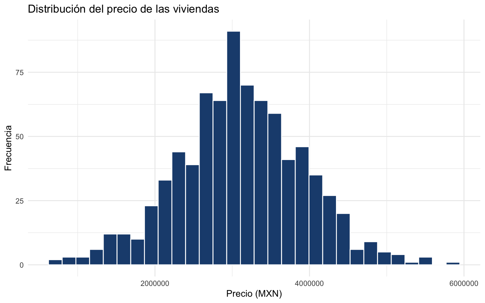
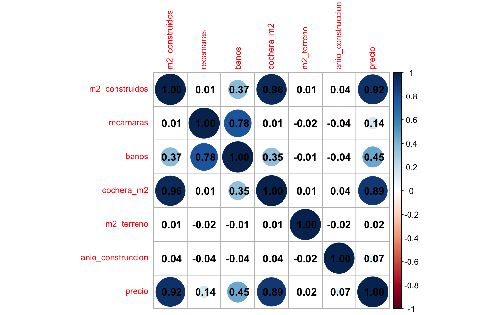
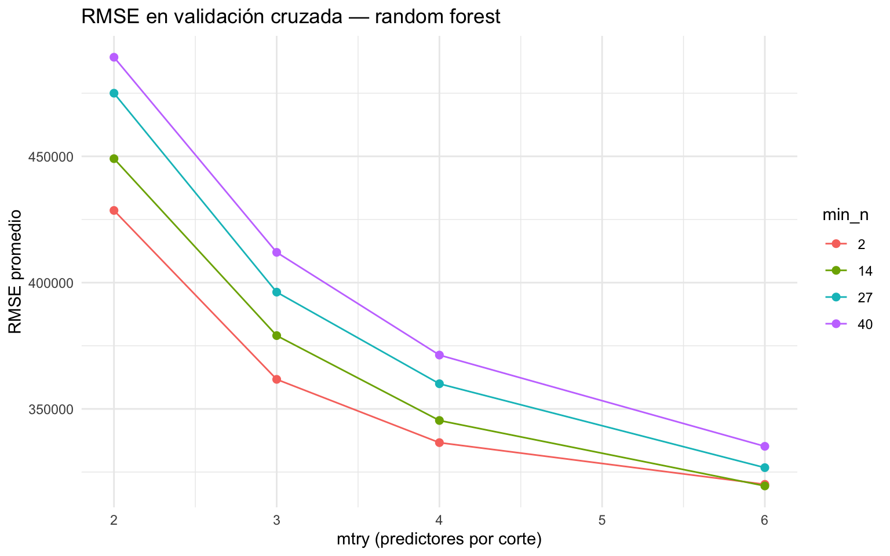
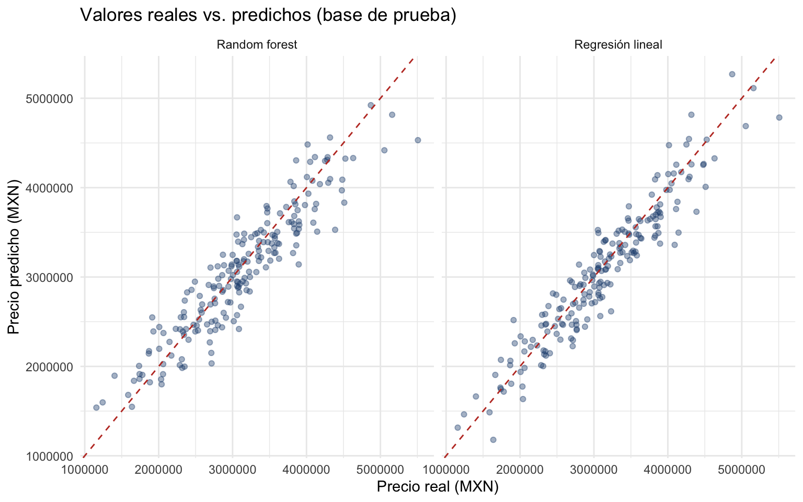
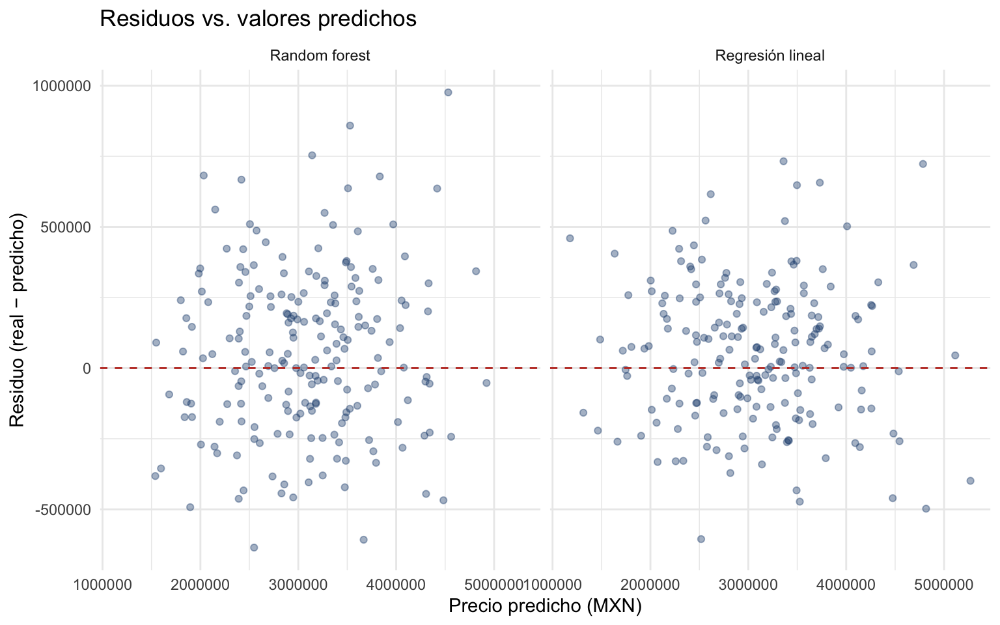
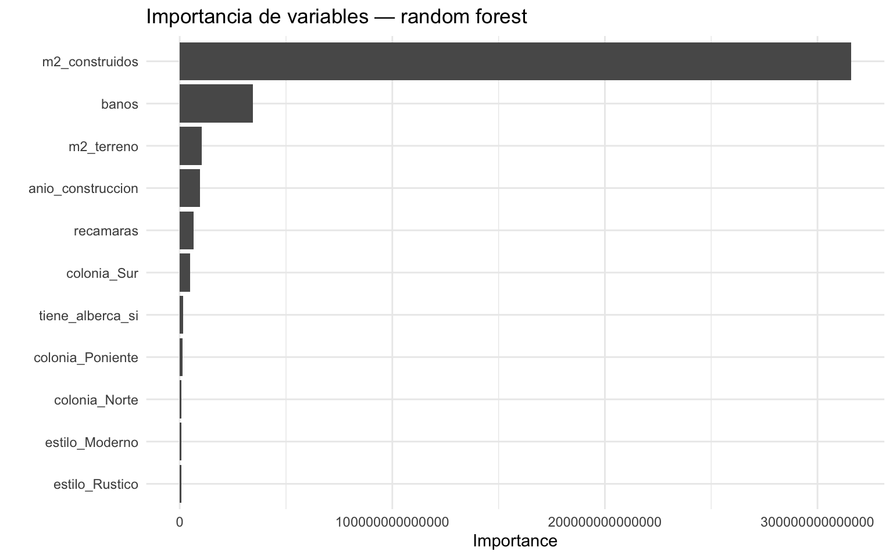

options(scipen = 999)Regresión: precio de viviendas
EJERCICIO DE REGRESIÓN — Regresión lineal vs. random forest (no visto en clase)
Objetivo. Predecir el precio de una vivienda a partir de sus características físicas y de ubicación. Compararemos dos modelos sobre el mismo flujo de trabajo: una regresión lineal (modelo base, interpretable) y un random forest (no visto en clase) (ensamble de árboles por bagging, que capta no linealidades e interacciones). El conjunto de datos combina variables numéricas con variables categóricas (colonia, estilo), así que la receta tendrá que codificarlas como variables dummy. Recorreremos el flujo completo de tidymodels: partición de los datos, receta de preprocesamiento, workflow(), validación cruzada, ajuste de hiperparámetros y una evaluación honesta con last_fit(). Al final daremos un veredicto claro sobre cuál modelo conviene.
1. Cargar librerías
Agrupamos todas las librerías al inicio (buena práctica de reproducibilidad). tidyverse da el lenguaje de manipulación de datos; tidymodels es el marco de modelado; readxl lee el archivo de Excel; ranger es el motor que ajusta el random forest; corrplot dibuja la matriz de correlación.
library(tidyverse)
library(tidymodels)
library(corrplot)
library(readxl)
library(ranger)tidymodels_prefer() resuelve los conflictos de nombres a favor de tidymodels (por ejemplo, que spec() sea la de yardstick y no la de otro paquete).
tidymodels::tidymodels_prefer()2. Cargar los datos
Descarga los datos y reproduce el ejercicio en tu computadora
Los datos de este ejercicio están versionados en el repositorio del curso en GitHub: precio_viviendas_2.xlsx. Como es un archivo de Excel, descárgalo desde esa liga y guárdalo junto a tu script; también puedes bajarlo desde R y leerlo con read_excel():
library(readxl)
download.file("https://raw.githubusercontent.com/JuveCampos/TC2001B.601-Ciencia-de-datos-ene-jun-2026/main/05_EXAMENES/ejercicios_regresion_clasificacion/regresion/04_precio_viviendas/precio_viviendas_2.xlsx",
destfile = "precio_viviendas_2.xlsx", mode = "wb")
viviendas <- read_excel("precio_viviendas_2.xlsx")Con esa liga puedes reproducir todo el ejercicio en tu propia computadora.
Los datos vienen en un archivo de Excel, así que los leemos con read_excel(). A diferencia de otros conjuntos, aquí no hay una columna identificadora (tipo id) que debamos remover. Las variables de texto (como colonia y estilo) se dejan como están; la receta las convertirá en variables dummy más adelante.
# Los datos vienen en Excel. No hay columna identificadora que remover.
viviendas <- read_excel("precio_viviendas_2.xlsx")glimpse() nos da un vistazo rápido a los tipos y valores de cada columna. Conviene fijarse en cuáles son numéricas y cuáles son categóricas (texto).
glimpse(viviendas)Rows: 800
Columns: 11
$ m2_construidos <dbl> 217, 182, 226, 256, 202, 170, 204, 175, 159, 222, 15…
$ recamaras <dbl> 3, 2, 3, 5, 5, 2, 3, 5, 2, 3, 2, 2, 2, 3, 5, 4, 5, 2…
$ banos <dbl> 2.8, 2.2, 3.1, 3.6, 3.8, 1.5, 2.8, 3.0, 2.0, 3.3, 2.…
$ cochera_m2 <dbl> 48.1, 39.5, 43.7, 55.6, 42.2, 31.1, 43.4, 36.6, 33.4…
$ m2_terreno <dbl> 146, 353, 274, 216, 187, 141, 193, 169, 106, 347, 16…
$ anio_construccion <dbl> 2002, 1984, 1984, 1968, 1996, 1990, 2000, 1994, 1970…
$ colonia <chr> "Norte", "Poniente", "Sur", "Poniente", "Norte", "Su…
$ estilo <chr> "Colonial", "Moderno", NA, "Colonial", "Colonial", "…
$ tiene_alberca <chr> "no", "no", "no", "no", "no", "no", "no", "no", "no"…
$ inspeccion <chr> "aprobado", "aprobado", "aprobado", "aprobado", "apr…
$ precio <dbl> 3370190, 3050204, 3797343, 3588065, 3480137, 2654649…3. Explorar los datos
Antes de modelar conviene entender la variable objetivo y las relaciones entre predictores. Tres revisiones mínimas: la distribución de la objetivo (¿hay asimetría o valores extremos?), los datos faltantes (¿qué tendremos que imputar?) y la colinealidad (¿hay predictores que miden casi lo mismo?).
Primero, el histograma del precio. Los precios de vivienda suelen tener una cola derecha larga (unas pocas casas muy caras): buscamos si la distribución es aproximadamente simétrica o muy sesgada.
viviendas %>%
ggplot(aes(x = precio)) +
geom_histogram(bins = 30, fill = "#1e4c7d", color = "white") +
labs(title = "Distribución del precio de las viviendas",
x = "Precio (MXN)", y = "Frecuencia") +
theme_minimal()
summary() resume cada variable y, de paso, nos dice cuántos NA tiene cada columna.
summary(viviendas) m2_construidos recamaras banos cochera_m2
Min. : 4.0 Min. :1.000 Min. :1.000 Min. : 5.50
1st Qu.:138.8 1st Qu.:3.000 1st Qu.:2.400 1st Qu.:29.88
Median :179.0 Median :3.000 Median :2.700 Median :37.10
Mean :179.9 Mean :3.449 Mean :2.766 Mean :37.47
3rd Qu.:218.0 3rd Qu.:4.000 3rd Qu.:3.200 3rd Qu.:44.80
Max. :376.0 Max. :6.000 Max. :4.800 Max. :76.30
NA's :14
m2_terreno anio_construccion colonia estilo
Min. : 78.0 Min. :1955 Length:800 Length:800
1st Qu.: 186.2 1st Qu.:1971 Class :character Class :character
Median : 238.0 Median :1988 Mode :character Mode :character
Mean : 262.1 Mean :1987
3rd Qu.: 316.0 3rd Qu.:2003
Max. :1126.0 Max. :2020
NA's :54 NA's :37
tiene_alberca inspeccion precio
Length:800 Length:800 Min. : 658884
Class :character Class :character 1st Qu.:2613565
Mode :character Mode :character Median :3084846
Mean :3108479
3rd Qu.:3628371
Max. :5806235
Contamos los NA por columna de forma explícita: esto guía qué pasos de imputación necesitará la receta.
viviendas %>%
summarise(across(everything(), ~ sum(is.na(.)))) %>%
pivot_longer(everything(), names_to = "variable", values_to = "n_na") %>%
arrange(desc(n_na))| variable | n_na |
|---|---|
| m2_terreno | 54 |
| anio_construccion | 37 |
| estilo | 34 |
| banos | 14 |
| m2_construidos | 0 |
| recamaras | 0 |
| cochera_m2 | 0 |
| colonia | 0 |
| tiene_alberca | 0 |
| inspeccion | 0 |
| precio | 0 |
La matriz de correlación nos deja ver colinealidad entre predictores numéricos (por ejemplo, m2_construidos y m2_terreno suelen moverse juntas). Si dos variables miden casi lo mismo, la regresión lineal sufre (infla la varianza de los coeficientes); por eso más adelante filtraremos con step_corr().
# Colinealidad entre las variables numéricas (p. ej. m2_construidos y
# m2_terreno).
matriz_correlacion <- viviendas %>%
select(where(is.numeric)) %>%
drop_na() %>%
cor() %>%
round(2)
matriz_correlacion %>%
corrplot(method = "circle", addCoef.col = "black", tl.cex = 0.8)
4. Partición entrenamiento / prueba
Dividimos los datos en entrenamiento (75%) y prueba (25%). La base de prueba se “guarda en una caja fuerte”: no la tocamos hasta el final, para obtener una estimación honesta del desempeño en datos nuevos. Estratificamos por la objetivo para que ambas particiones cubran rangos de precio parecidos (en regresión, initial_split estratifica por cuantiles).
set.seed(2026)
viviendas_split <- initial_split(viviendas, prop = 0.75, strata = precio)
viviendas_entrenamiento <- viviendas_split %>% training()
viviendas_prueba <- viviendas_split %>% testing()c(entrenamiento = nrow(viviendas_entrenamiento),
prueba = nrow(viviendas_prueba))entrenamiento prueba
600 200 5. Receta de preprocesamiento (compartida por ambos modelos)
Usamos una sola receta para que los dos modelos sean comparables: ambos verán exactamente la misma representación de los datos. Como hay variables categóricas (colonia, estilo, etc.), un paso clave aquí es step_dummy, que las convierte en columnas 0/1; sin esa codificación, ni la regresión lineal ni el random forest podrían usarlas.
¿Qué es una receta y por qué importa el orden de los pasos?
Una receta (recipe) encadena pasos de preprocesamiento (step_*) que se aprenden solo con el entrenamiento y luego se aplican igual a la prueba (esto evita fuga de información). El orden importa: imputamos los NA primero, porque pasos como step_corr o step_normalize no toleran faltantes; normalizamos antes de crear dummies para que estas queden en 0/1; y dejamos step_zv al final como red de seguridad.
El papel de step_dummy merece una nota aparte, porque es lo que distingue a este conjunto de datos: tiene variables de texto (colonia, estilo) que ningún modelo numérico puede usar tal cual.
¿Qué hace step_dummy con las variables categóricas?
Variables como colonia o estilo son texto, y los modelos solo operan con números. step_dummy convierte cada categoría en columnas indicadoras 0/1 (one-hot con una categoría de referencia). Así, una colonia con 5 valores se vuelve 4 columnas binarias. Es indispensable para la regresión lineal y también lo usamos aquí para el random forest, de modo que ambos modelos vean exactamente la misma matriz de predictores y la comparación sea limpia.
# Receta única comparable:
# 1. Imputar numéricos (mediana) y nominales (moda).
# 2. step_nzv: quitar casi-constantes.
# 3. step_corr: filtrar colinealidad numérica (umbral 0.85).
# 4. step_normalize: estandarizar numéricos.
# 5. step_dummy: codificar colonia, estilo, tiene_alberca, inspeccion.
# 6. step_zv: por seguridad.
receta_viviendas <- recipe(precio ~ ., data = viviendas_entrenamiento) %>%
step_impute_median(all_numeric_predictors()) %>%
step_impute_mode(all_nominal_predictors()) %>%
step_nzv(all_predictors()) %>%
step_corr(all_numeric_predictors(), threshold = 0.85) %>%
step_normalize(all_numeric_predictors()) %>%
step_dummy(all_nominal_predictors()) %>%
step_zv(all_predictors())Conviene “hornear” la receta una vez para ver cómo quedan las variables tras el preprocesamiento (solo es inspección; el workflow lo hará por nosotros después). Fíjate cómo las categóricas se expandieron en varias columnas dummy.
receta_viviendas %>%
prep(training = viviendas_entrenamiento) %>%
bake(new_data = NULL) %>%
glimpse()Rows: 600
Columns: 12
$ m2_construidos <dbl> -0.3388427, -1.6999385, -0.4036567, -1.2786469, -0.8…
$ recamaras <dbl> -1.2506089, -1.2506089, -1.2506089, 0.4224465, 0.422…
$ banos <dbl> -1.2754060, -1.1136892, -0.6285390, 0.5034781, 0.018…
$ m2_terreno <dbl> -1.44018482, 0.81617176, -0.65736723, -0.31661134, -…
$ anio_construccion <dbl> -0.95412731, 0.64110691, 0.96015375, 0.58793243, 0.4…
$ precio <dbl> 2379943, 1731176, 2607709, 2096274, 2576822, 1877924…
$ colonia_Norte <dbl> 0, 0, 1, 1, 0, 0, 0, 1, 0, 0, 0, 1, 0, 0, 0, 0, 0, 0…
$ colonia_Poniente <dbl> 1, 1, 0, 0, 1, 0, 1, 0, 1, 1, 0, 0, 0, 1, 0, 0, 1, 0…
$ colonia_Sur <dbl> 0, 0, 0, 0, 0, 1, 0, 0, 0, 0, 0, 0, 0, 0, 1, 0, 0, 0…
$ estilo_Moderno <dbl> 0, 0, 0, 1, 1, 0, 1, 0, 0, 1, 0, 1, 1, 1, 0, 0, 1, 1…
$ estilo_Rustico <dbl> 1, 0, 0, 0, 0, 0, 0, 0, 0, 0, 0, 0, 0, 0, 1, 0, 0, 0…
$ tiene_alberca_si <dbl> 0, 1, 0, 0, 0, 0, 0, 1, 1, 0, 1, 0, 1, 0, 0, 0, 0, 0…6. Especificación de los modelos
Definimos los dos modelos con parsnip. El primero es la regresión lineal: no tiene hiperparámetros que ajustar.
modelo_lineal <- linear_reg() %>%
set_engine("lm") %>%
set_mode("regression")El segundo es el random forest, donde sí ajustaremos dos hiperparámetros (mtry y min_n). Pedimos importance = "impurity" al motor para poder graficar después la importancia de variables.
¿Qué es un random forest (bagging)? (no visto en clase)
Un random forest promedia cientos de árboles, cada uno entrenado sobre una muestra bootstrap de los datos y con un subconjunto aleatorio de predictores en cada corte. Promediar muchos árboles ruidosos pero poco sesgados reduce la varianza sin aumentar el sesgo, lo que suele dar mejores predicciones que un solo árbol. Ajustamos mtry (cuántos predictores se consideran en cada corte) y min_n (mínimo de observaciones por nodo); trees = 500 fija el número de árboles. tune() marca mtry y min_n como “a determinar por validación cruzada”.
modelo_rf <- rand_forest(
mtry = tune(),
min_n = tune(),
trees = 500
) %>%
set_engine("ranger", importance = "impurity") %>%
set_mode("regression")Cada modelo se empaqueta con la misma receta en su propio workflow.
¿Qué es un workflow?
Un workflow empaqueta en un solo objeto la receta de preprocesamiento y el modelo. Al hacer fit() aplica internamente prep + bake + fit, y al predict() repite el mismo preprocesamiento sobre los datos nuevos sin que tengamos que recordarlo. Es la pieza estándar para validación cruzada y tuning.
workflow_lineal <- workflow() %>%
add_recipe(receta_viviendas) %>%
add_model(modelo_lineal)
workflow_rf <- workflow() %>%
add_recipe(receta_viviendas) %>%
add_model(modelo_rf)7. Validación cruzada y tuning de hiperparámetros
Para comparar los modelos y elegir los hiperparámetros del random forest sin tocar la prueba, usamos validación cruzada sobre el entrenamiento.
¿Qué es la validación cruzada (k-fold)?
Partimos el entrenamiento en v partes (folds) del mismo tamaño. En cada ronda entrenamos con v − 1 folds y evaluamos en el fold restante, rotando cuál se deja fuera; luego promediamos el desempeño. Así estimamos qué tan bien generaliza el modelo usando solo el entrenamiento, y reservamos la prueba para el final.
set.seed(2026)
folds_cv <- vfold_cv(viviendas_entrenamiento, v = 5, strata = precio)Definimos las métricas de regresión que vigilaremos.
RMSE, MAE y R²
- RMSE (raíz del error cuadrático medio): error típico en las unidades de la objetivo; penaliza más los errores grandes. Es la métrica de decisión.
- MAE (error absoluto medio): error típico, más robusto a valores extremos.
- R²: proporción de la variación de la objetivo que el modelo explica (1 = perfecto; 0 = no mejor que predecir la media).
metricas_regresion <- metric_set(rmse, rsq, mae)La regresión lineal no se tunea; estimamos su desempeño en CV con fit_resamples(). Esto la pone en igualdad de condiciones que el random forest.
fit_resamples() vs. tune_grid()
Cuando un modelo no tiene hiperparámetros que ajustar (regresión lineal), fit_resamples() solo lo evalúa en cada fold. Cuando sí los tiene (el random forest), tune_grid() prueba varias combinaciones de hiperparámetros en la validación cruzada y nos deja elegir la mejor.
set.seed(2026)
cv_lineal <- workflow_lineal %>%
fit_resamples(resamples = folds_cv, metrics = metricas_regresion)
collect_metrics(cv_lineal)| .metric | .estimator | mean | n | std_err | .config |
|---|---|---|---|---|---|
| mae | standard | 214696.8877761 | 5 | 17126.3722536 | pre0_mod0_post0 |
| rmse | standard | 270403.3162853 | 5 | 20936.7601942 | pre0_mod0_post0 |
| rsq | standard | 0.8927836 | 5 | 0.0148171 | pre0_mod0_post0 |
Para el random forest construimos una grilla de hiperparámetros: combinaciones de mtry (entre 2 y 6 predictores por corte) y min_n (entre 2 y 40 observaciones por nodo), con levels = 4 para 4 × 4 = 16 candidatos.
grilla_rf <- grid_regular(
mtry(range = c(2, 6)),
min_n(range = c(2, 40)),
levels = 4
)set.seed(2026)
tuning_rf <- workflow_rf %>%
tune_grid(resamples = folds_cv,
grid = grilla_rf,
metrics = metricas_regresion)La siguiente gráfica resume el tuning: muestra el RMSE de validación cruzada según mtry, con una línea por valor de min_n. Buscamos la combinación con menor RMSE.
tuning_rf %>%
collect_metrics() %>%
filter(.metric == "rmse") %>%
ggplot(aes(x = mtry, y = mean, color = factor(min_n))) +
geom_line() +
geom_point(size = 2) +
labs(title = "RMSE en validación cruzada — random forest",
x = "mtry (predictores por corte)", y = "RMSE promedio",
color = "min_n") +
theme_minimal()
mejor_rf <- tuning_rf %>% select_best(metric = "rmse")
mejor_rf| mtry | min_n | .config |
|---|---|---|
| 6 | 14 | pre0_mod14_post0 |
8. Implementar el workflow final de cada modelo
La regresión lineal ya está lista. Al random forest le inyectamos los hiperparámetros ganadores con finalize_workflow().
workflow_rf_final <- workflow_rf %>%
finalize_workflow(mejor_rf)9. Entrenar y evaluar con last_fit() sobre la prueba
¿Qué hace last_fit()?
last_fit() toma el split original, reentrena el modelo final sobre TODO el entrenamiento y lo evalúa una sola vez sobre la base de prueba reservada. Es el paso que da la estimación honesta del desempeño en datos que el modelo nunca vio.
ajuste_lineal <- workflow_lineal %>%
last_fit(split = viviendas_split, metrics = metricas_regresion)
ajuste_rf <- workflow_rf_final %>%
last_fit(split = viviendas_split, metrics = metricas_regresion)10. Pruebas del modelo: métricas y comparación
Reunimos las métricas de ambos modelos en la base de prueba en una sola tabla. Esta es la comparación que nos interesa: el desempeño en datos no vistos.
metricas_comparacion <- bind_rows(
collect_metrics(ajuste_lineal) %>% mutate(modelo = "Regresión lineal"),
collect_metrics(ajuste_rf) %>% mutate(modelo = "Random forest")
) %>%
select(modelo, .metric, .estimate) %>%
pivot_wider(names_from = .metric, values_from = .estimate) %>%
arrange(rmse)
metricas_comparacion| modelo | rmse | rsq | mae |
|---|---|---|---|
| Regresión lineal | 249816.2 | 0.9022170 | 200156.0 |
| Random forest | 293113.5 | 0.8636891 | 234919.5 |
Para visualizar la calidad de cada modelo, graficamos los valores reales contra los predichos. La diagonal roja es la predicción perfecta: entre más pegados los puntos a la línea, mejor.
preds_lineal <- collect_predictions(ajuste_lineal) %>%
mutate(modelo = "Regresión lineal")
preds_rf <- collect_predictions(ajuste_rf) %>%
mutate(modelo = "Random forest")
preds_ambos <- bind_rows(preds_lineal, preds_rf)preds_ambos %>%
ggplot(aes(x = precio, y = .pred)) +
geom_point(alpha = 0.4, color = "#1e4c7d") +
geom_abline(color = "#c0392b", linetype = 2) +
facet_wrap(~ modelo) +
labs(title = "Valores reales vs. predichos (base de prueba)",
x = "Precio real (MXN)", y = "Precio predicho (MXN)") +
theme_minimal()
El gráfico de residuos (real − predicho) contra el valor predicho ayuda a detectar sesgos: buscamos una nube sin patrón alrededor del cero. Un embudo o una curva indicarían que el modelo se equivoca sistemáticamente en algún rango (común en precios: a veces se subestiman las casas más caras).
preds_ambos %>%
mutate(residuo = precio - .pred) %>%
ggplot(aes(x = .pred, y = residuo)) +
geom_point(alpha = 0.4, color = "#1e4c7d") +
geom_hline(yintercept = 0, color = "#c0392b", linetype = 2) +
facet_wrap(~ modelo) +
labs(title = "Residuos vs. valores predichos",
x = "Precio predicho (MXN)", y = "Residuo (real − predicho)") +
theme_minimal()
Una ventaja del random forest es que nos dice qué variables pesan más en sus predicciones. La gráfica de importancia de variables (vip) (no visto en clase) ordena los predictores según cuánto reducen el error al usarse en los cortes de los árboles (importancia por impurity, que pedimos al motor con importance = "impurity"). Las barras más largas son los principales determinantes del precio; suelen aparecer arriba la superficie construida, la ubicación (colonias específicas) y el número de recámaras.
ajuste_rf %>%
extract_fit_parsnip() %>%
vip::vip(num_features = 12) +
labs(title = "Importancia de variables — random forest") +
theme_minimal()
Veredicto: ¿cuál es el mejor modelo?
# Ordenamos por RMSE (menor es mejor) y medimos la diferencia relativa entre
# el mejor y el segundo, para juzgar si la ventaja es relevante o marginal.
tabla_final <- metricas_comparacion %>%
arrange(rmse) %>%
mutate(rmse = round(rmse, 2),
rsq = round(rsq, 3),
mae = round(mae, 2))
ganador <- tabla_final %>% slice(1)
perdedor <- tabla_final %>% slice(2)
dif_rel_pct <- round(100 * (perdedor$rmse - ganador$rmse) / perdedor$rmse, 1)# Tabla comparativa final (ordenada del mejor al peor por RMSE)
tabla_final| modelo | rmse | rsq | mae |
|---|---|---|---|
| Regresión lineal | 249816.2 | 0.902 | 200156.0 |
| Random forest | 293113.5 | 0.864 | 234919.5 |
Modelo recomendado: Regresión lineal. Obtiene el menor RMSE en la base de prueba (249816.2 MXN) con un R² de 0.902, frente a 293113.52 MXN del random forest. Su RMSE es 14.8% menor.
La ventaja de Regresión lineal es relevante (14.8% en RMSE), por lo que es la elección clara para este problema.
Recuerda el balance: la regresión lineal es la más fácil de interpretar (un coeficiente por variable, incluida cada dummy de colonia o estilo), mientras que el random forest captura no linealidades e interacciones (por ejemplo, que el valor del terreno dependa de la colonia) a costa de ser una “caja” menos transparente; la gráfica de importancia de variables ayuda a abrir un poco esa caja.